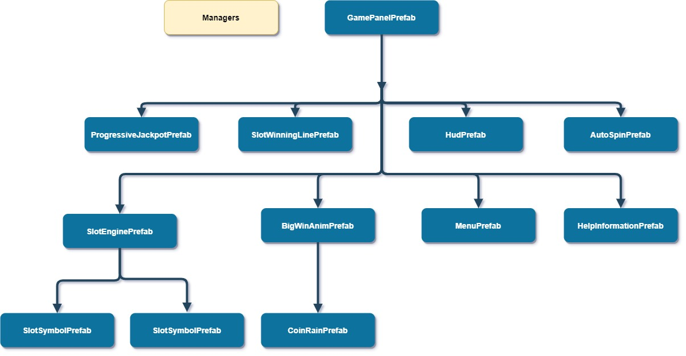

Project Structure
Game Flow
When game load, gg-framework will load main-bundle, common-bundle and game-bundle in sequence. In another perspective, MainSceneCtrl.ts (main-bundle) initiate boot page BootPanelPrefab (common-bundle) to download the assets and after finish download GamePanelPrefab (game-bundle) will start the main game UI.
Bundle Perspective
- Broswer load =>
main-bundle>common-bundle>game-bundle> game start
Prefab Perspective
- Broswer load =>
MainSceneCtrl.ts>BootPanelPrefab>GamePanelPrefab> game start
Game Chart

Comunication way:
- Only parent can directly import/reference to childs
- Child only use event emit to comunication to parent or sibling
The purpose of decoupling forming modules to improve reusability and facilitate cross-project use. Super-Template game chart will change time to time to meet business requirement.
Managers
All manager created in singleton class to make it easily access globally
GameSystemManager
- Manage game system like game config, frame per second .etc.
BankManager
- Manage player balance
AudioManager
- Manage game sound effect
BetDenomManager
- Manage game bet denom or bet value
BetLineManager
- Manage game bet line
BetInfoManager
- Manager of
BetDenomManagerandBetLineManager - Manage bet info
CreditCoinConvertorManager
- Manage 'credit to coin' or 'coin to credit' convertion
EventQueueManager
- Mainly controling UI event happening and resove it by sequence (more details)